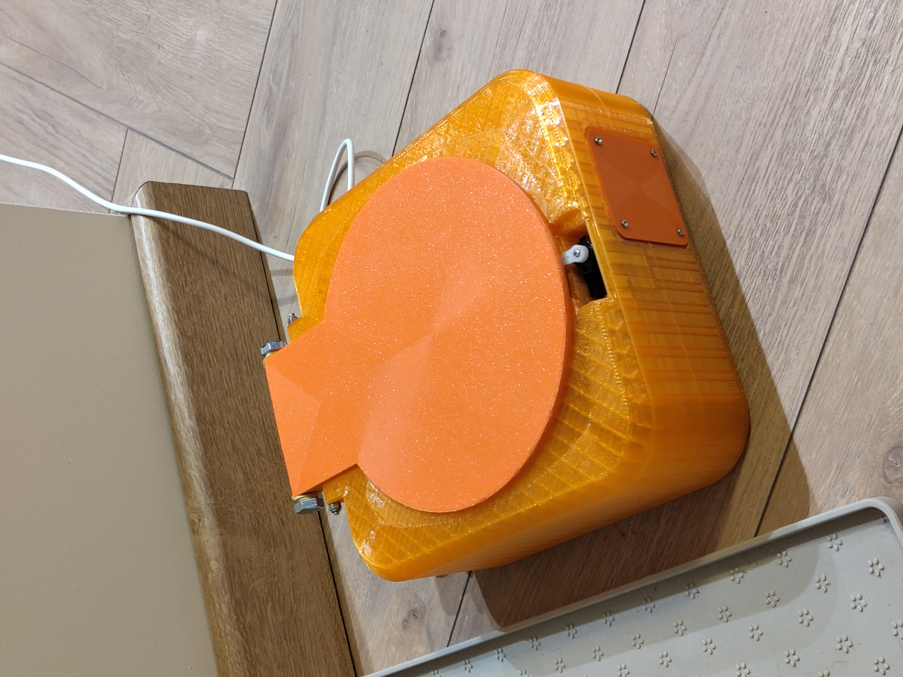
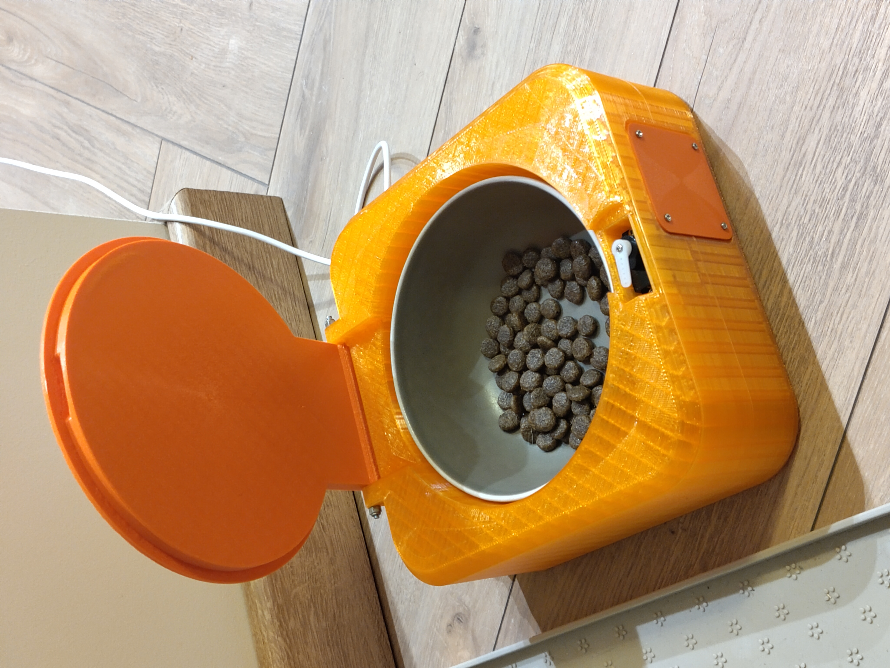
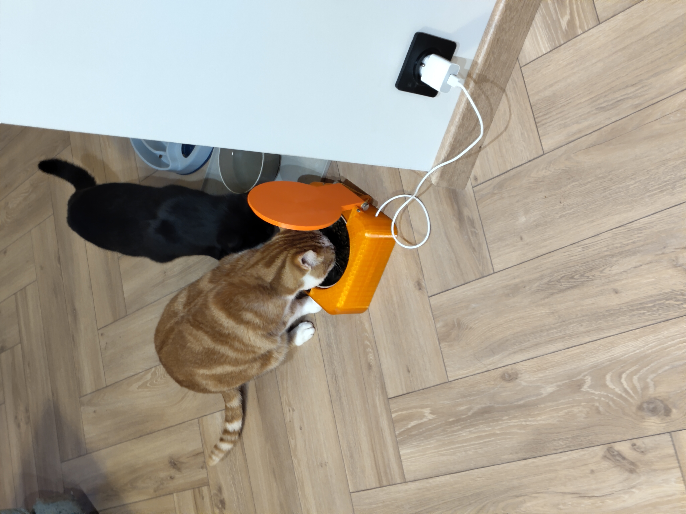
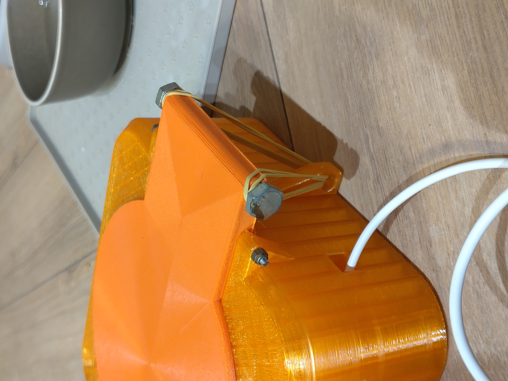
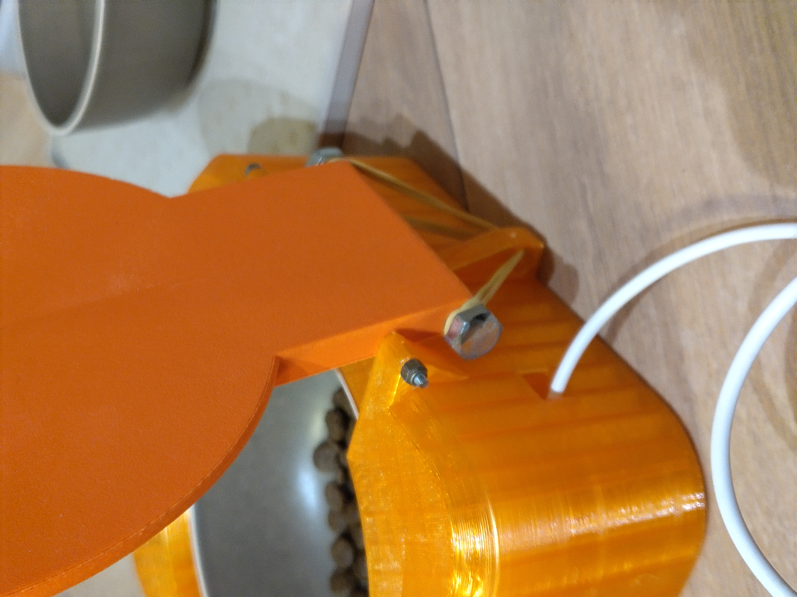

Genèse du projet
Ce projet est né d'un besoin personnel concret : garantir l'alimentation de mon animal en cas d'absence imprévue. Face aux solutions commerciales existantes (distributeurs programmables rigides, systèmes complexes avec application propriétaire), j'ai identifié une opportunité de concevoir une solution minimaliste, open-source et intégrable dans mon infrastructure domotique existante.
Objectifs de conception
- Simplicité mécanique : Privilégier un mécanisme fiable avec peu de pièces mobiles
- Intégration domotique native : Compatible Home Assistant via protocole standardisé (Zigbee)
- Fabrication accessible : Entièrement réalisable avec une imprimante 3D FDM standard
- Coût maîtrisé : Budget cible <20€ en composants électroniques
- Maintenance minimale : Conception modulaire facilitant réparations et modifications
Démarche de conception
Analyse du besoin et spécifications
La première étape a consisté à analyser les contraintes fonctionnelles et techniques du système :
- Fonction principale : Déverrouillage à distance d'un conteneur de nourriture
- Contrainte de fiabilité : Le mécanisme doit fonctionner à 100% (pas de blocage possible)
- Contrainte énergétique : Alimentation secteur acceptable (pas d'autonomie requise)
- Contrainte réseau : Doit s'intégrer dans une installation Home Assistant existante
- Contrainte de fabrication : Impression 3D FDM uniquement (pas d'usinage CNC)
Choix technologiques et arbitrages
Mécanisme d'ouverture : approche mécanique passive
Plutôt qu'un système motorisé continu (moteur DC, vérin électrique), j'ai opté pour une approche hybride mécanique-élastique. Le servo SG90 ne sert qu'à libérer un verrou, l'ouverture réelle étant assurée par des bandes élastiques pré-tendues.
Avantages de cette solution :
- Consommation énergétique minimale (servo actif seulement 2-3 secondes)
- Fiabilité accrue : l'énergie élastique garantit une ouverture franche même en cas de frottements
- Simplicité mécanique : pas de transmission complexe (engrenages, courroies)
- Réduction du bruit : ouverture silencieuse après le déverrouillage
Choix du microcontrôleur : ESP32 H4 vs alternatives
Le choix de l'ESP32 H4 a été motivé par plusieurs facteurs techniques :
- Support Zigbee natif : Protocole industriel, plus robuste que le Wi-Fi pour l'IoT
- Format compact : SuperMini adapté aux contraintes d'encombrement du boîtier
- Coût : ~5€, bien inférieur à des alternatives Zigbee dédiées (CC2652, etc.)
Caractéristiques techniques
Composants électroniques
- ESP32 H4 SuperMini : Microcontrôleur avec support Zigbee intégré
- Servo SG90 : Actionneur pour le mécanisme de déverrouillage (9g, 180°)
- Alimentation 5V USB : Câble USB standard pour l'alimentation
Composants mécaniques
- Boîtier imprimé 3D : 3 pièces principales (base, couvercle, mécanisme de verrouillage)
- Tige filetée M3 : Axe de charnière pour l'ouverture du couvercle
- Écrous M3 : 2× écrous pour la fixation de la charnière
- Bandes élastiques : Système de rappel pour l'ouverture automatique du couvercle
- Vis M2 : 6× vis pour la fixation du servo et assemblage
Développement mécanique
Modélisation CAO et itérations de conception
La conception mécanique a été réalisée sous Onshape, en privilégiant une approche paramétrique permettant d'ajuster rapidement les dimensions en fonction des résultats de prototypage.
Contraintes de conception pour l'impression 3D FDM
- Minimisation des supports : Orientation des pièces pour limiter les porte-à-faux >45°
- Tolérances d'assemblage : Jeu de 0.2-0.5mm sur les pièces mobiles (charnière, verrou)
- Épaisseurs de paroi : Minimum 3mm pour garantir la rigidité structurelle
- Inserts filetés évités : Filetage direct dans le PLA
- Anisotropie du matériau : Sollicitations mécaniques orientées selon le plan de dépose
Cinématique du mécanisme de déverrouillage
Le palonnier du servo SG90 vient bloquer directement le couvercle en position fermée.
Principe de fonctionnement
- Position verrouillée (0°) : Le palonnier du servo, positionné à 0°, s'insère dans une encoche du couvercle et le maintient fermé contre la force de rappel des élastiques.
- Déverrouillage (90°) : Une rotation du servo de 90° libère le palonnier de l'encoche, supprimant instantanément le blocage mécanique
- Ouverture automatique : Dès que le palonnier se dégage, les élastiques pré-tendus propulsent le couvercle vers le haut via la charnière M3, donnant accès au contenu
Réglage empirique des élastiques
Le nombre d'élastiques a été déterminé par essais successifs pour obtenir un équilibre optimal : suffisamment de force pour garantir une ouverture franche du couvercle, tout en appliquant une force principalement radiale sur le servo. Les élastiques ne contraignent pas directement le servo en opposition, ce qui minimise le couple requis lors du verrouillage/déverrouillage. Configuration finale retenue après tests : 2-3 élastiques standards (diamètre ~60mm) selon la force d'ouverture souhaitée.
Optimisation pour la fabrication additive
Stratégie d'impression validée par prototypage
- Matériau final : PETG pour version définitive (meilleure résistance aux UV et températures, important si exposition solaire)
- Post-traitement minimal : Ébavurage au cutter uniquement sur les points de contact mobile (charnière, interface verrou-ergot)
Architecture électronique et système embarqué
Plateforme matérielle : ESP32 H4 SuperMini
L'architecture électronique a été volontairement simplifiée au maximum pour réduire les points de défaillance et faciliter le débogage. Le système ne comporte que deux composants actifs : l'ESP32 H4 et le servo SG90.
Justification technique du choix ESP32 H4
- Protocole Zigbee 3.0 natif : L'ESP32 H4 intègre une radio IEEE 802.15.4 compatible Zigbee, évitant l'ajout d'un module externe (simplifie le routage PCB et réduit l'encombrement)
- Développement bas niveau possible : Accès direct aux API ESP-IDF pour développement firmware custom en C/C++, permettant optimisations fines et contrôle total du matériel
- Bilan énergétique : Consommation en veille Zigbee : ~15mA, acceptable pour alimentation secteur USB. Si autonomie requise à l'avenir, passage en deep sleep possible (5µA)
- Périphériques intégrés : Timer matériel LEDC pour génération PWM servo sans CPU overhead
Choix du servo SG90
Le servo SG90 (9g, couple 1.8 kg·cm @ 5V) a été sélectionné pour sa disponibilité, son faible coût (~3€) et son encombrement réduit compatible avec le boîtier compact. Le mécanisme ayant été conçu avec une force radiale des élastiques plutôt qu'une opposition frontale, le couple requis pour le déverrouillage reste faible et largement dans les capacités du SG90.
Alimentation et interfaçage
Le SG90 peut consommer jusqu'à 200-250mA en charge. L'architecture adoptée simplifie le câblage :
- Alimentation directe 5V : Le servo est alimenté directement depuis le rail USB 5V, évitant l'utilisation du régulateur 3.3V interne de l'ESP32 (limité à 500mA)
- Signal PWM 3.3V : Le servo SG90 accepte les signaux logiques 3.3V, permettant une connexion directe depuis une GPIO de l'ESP32 sans level shifter
- Pas de régulateur intermédiaire : L'alimentation USB fournit directement le 5V, simplifiant le circuit et réduisant les pertes énergétiques
Architecture système minimale
Schéma électrique
L'architecture finale ne comporte aucun composant passif (résistances, condensateurs), uniquement trois connexions directes :
- USB 5V → VIN ESP32 + VCC Servo (alimentation commune)
- GND commun → GND ESP32 + GND Servo
- GPIO 2 (PWM) → Signal Servo
Absence de protection : choix justifié
Aucune diode de roue libre, condensateur de découplage ou protection surtension n'a été ajouté. Justification : le servo SG90 n'est pas un moteur brushless (pas de back-EMF), l'alimentation USB est stabilisée en amont, et la consommation instantanée reste dans les limites du port USB.
En environnement industriel, des protections seraient nécessaires. Ici, le compromis simplicité/fiabilité a été privilégié pour un prototype fonctionnel.
Développement logiciel et intégration domotique
Architecture firmware ESP-IDF
Le firmware a été développé en C/C++ sur le framework ESP-IDF, offrant un contrôle total sur le matériel et permettant une optimisation fine du système embarqué. Ce choix s'est imposé pour maîtriser l'intégration Zigbee et la gestion temps réel du servo.
Stack logicielle développée
- Couche Zigbee : Utilisation de la stack Zigbee native ESP-IDF (composant esp-zigbee-lib) pour l'intégration protocole IEEE 802.15.4
- Driver LEDC : Configuration du timer matériel LEDC (LED Control) pour génération PWM 50Hz sans overhead CPU, libérant les cycles processeur
- Machine à états : Gestion du cycle de vie du dispositif (appairage Zigbee, veille réseau, actuation servo) via une FSM (Finite State Machine)
- Gestion d'événements FreeRTOS : Architecture multi-tâche avec queue d'événements pour séparation logique réseau / contrôle matériel
Implémentation du contrôle servo
Configuration du timer LEDC
Le timer LEDC (périphérique matériel de l'ESP32) génère le signal PWM 50Hz requis par le servo SG90. Configuration bas niveau via registres ESP-IDF :
// Configuration du timer LEDC pour génération PWM servo
ledc_timer_config_t ledc_timer = {
.speed_mode = LEDC_LOW_SPEED_MODE,
.duty_resolution = LEDC_TIMER_13_BIT, // Résolution 13 bits
.timer_num = LEDC_TIMER_0,
.freq_hz = 50, // 50Hz standard servo
.clk_cfg = LEDC_AUTO_CLK
};
ledc_timer_config(&ledc_timer);
ledc_channel_config_t ledc_channel = {
.gpio_num = GPIO_NUM_18,
.speed_mode = LEDC_LOW_SPEED_MODE,
.channel = LEDC_CHANNEL_0,
.timer_sel = LEDC_TIMER_0,
.duty = 0,
.hpoint = 0
};
ledc_channel_config(&ledc_channel);
Fonction d'actuation avec détachement automatique
void unlock_feeder(void) {
// Position déverrouillée : 1.5ms pulse = 90°
// Duty cycle = (1.5ms / 20ms) * 8192 (13-bit) ≈ 614
uint32_t duty_unlock = 614;
ESP_LOGI(TAG, "Unlocking feeder...");
ledc_set_duty(LEDC_LOW_SPEED_MODE, LEDC_CHANNEL_0, duty_unlock);
ledc_update_duty(LEDC_LOW_SPEED_MODE, LEDC_CHANNEL_0);
// Maintien position 2 secondes
vTaskDelay(pdMS_TO_TICKS(2000));
// Détachement servo (coupe PWM pour économie énergie)
ledc_stop(LEDC_LOW_SPEED_MODE, LEDC_CHANNEL_0, 0);
ESP_LOGI(TAG, "Unlock complete, servo detached");
}
Justifications techniques
- Résolution 13 bits : Permet un contrôle précis du pulse PWM (8192 niveaux), nécessaire pour positionner le servo exactement à 90° (tolérance ±2°)
- ledc_stop après actuation : Désactive le timer PWM après 2s pour éviter consommation résiduelle (~10mA) et bruit ultrasonique (~16kHz). Le servo maintient sa position mécaniquement grâce à ses engrenages internes
- vTaskDelay non bloquant : Utilisation de l'API FreeRTOS permettant au scheduler de basculer sur d'autres tâches (ex: traitement réseau Zigbee) pendant l'attente
Intégration Zigbee et Home Assistant
Implémentation du cluster On/Off (Zigbee)
Le dispositif implémente le cluster Zigbee standard On/Off (0x0006), utilisé
typiquement pour les interrupteurs et prises connectées. Cela garantit la compatibilité avec
tous les coordinateurs Zigbee du marché.
// Déclaration du endpoint Zigbee avec cluster On/Off
static esp_zb_ep_list_t *esp_zb_ep_list;
esp_zb_on_off_cluster_cfg_t on_off_cfg = {
.on_off = ESP_ZB_ZCL_ON_OFF_ON_OFF_DEFAULT_VALUE,
};
esp_zb_cluster_list_t *esp_zb_cluster_list = esp_zb_zcl_cluster_list_create();
esp_zb_cluster_list_add_on_off_cluster(esp_zb_cluster_list,
&on_off_cfg,
ESP_ZB_ZCL_CLUSTER_SERVER_ROLE);
// Callback appelé lors d'une commande Zigbee On/Off
static esp_err_t zb_action_handler(esp_zb_core_action_callback_id_t callback_id,
const void *message) {
if (callback_id == ESP_ZB_CORE_SET_ATTR_VALUE_CB_ID) {
const esp_zb_zcl_set_attr_value_message_t *msg =
(esp_zb_zcl_set_attr_value_message_t *)message;
if (msg->info.cluster == ESP_ZB_ZCL_CLUSTER_ID_ON_OFF) {
if (msg->attribute.data.value) {
// Commande "On" reçue → déclencher déverrouillage
unlock_feeder();
}
}
}
return ESP_OK;
}
Découverte automatique dans Home Assistant
Une fois appairé au coordinateur Zigbee (via commande réseau),
le dispositif annonce ses capacités via le protocole de découverte Zigbee. Home Assistant
détecte automatiquement le cluster On/Off et crée une entité switch.pet_feeder
sans configuration manuelle.
Avantages du cluster standard On/Off :
- Interopérabilité totale : compatible ZHA, Zigbee2MQTT, deCONZ
- Pas de développement côté Home Assistant (reconnaissance native)
- Interface utilisateur automatique (toggle switch dans le dashboard)
- Support des automatisations et scénarios standards
Automatisations et scénarios domotiques
Exemples de scénarios implémentables
L'intégration dans Home Assistant permet de créer des automatisations complexes combinant plusieurs capteurs et services :
- Notification push avec géolocalisation : Alerte smartphone si absence >6h détectée (capteur de présence) + proposition de déverrouillage à distance
- Contrôle vocal multi-assistant : "Alexa/Google, déverrouille le distributeur de croquettes" via intégration native Home Assistant
- Déverrouillage conditionnel automatique : Libération automatique à 18h uniquement si géolocalisation téléphone indique >10km du domicile (évite déclenchement inutile si présent)
- Dashboard mobile unifié : Contrôle via l'application Home Assistant Companion (iOS/Android) depuis n'importe où dans le monde (via VPN)
- Historique et monitoring : Logs d'activation stockés dans Home Assistant, permettant analyse de patterns (nombre de déverrouillages/semaine, heures typiques)
Tests et validation
Protocole de validation mécanique
Pour garantir la fiabilité du mécanisme avant le déploiement, j'ai mis en place un protocole de tests cycliques simulant plusieurs mois d'utilisation :
Tests de durabilité
- Test de cycles répétés : 50 cycles verrouillage/déverrouillage consécutifs → Aucune défaillance mécanique constatée, verrou en PETG maintient sa géométrie
- Test de vieillissement élastiques : Mesure de la force de rappel après 1 semaine en tension constante → Pas de perte de force
- Test de température : Fonctionnement vérifié entre 5°C et 35°C (plage typique intérieur) → Pas d'altération du mécanisme
- Test de charge : Couvercle lesté à 200g (équivalent chat curieux appuyant dessus) → Verrou maintient la fermeture sans déformation
Taux de réussite final
Sur 50 déverrouillages en conditions réelles (après remplissage croquettes, différentes températures), 100% de succès.
Validation du système Zigbee
Tests de portée et fiabilité réseau
- Portée maximale testée : 15 mètres en ligne droite à travers 2 murs (appartement standard) → Communication stable, RSSI : -65 dBm
- Temps de réponse : Mesure du délai entre activation switch Home Assistant et début du mouvement servo → <300ms (imperceptible à l'usage)
- Reconnexion après coupure : Coupure USB 5min simulant panne secteur → Reconnexion automatique au réseau Zigbee en <10s après retour de l'alimentation
- Stabilité long terme : Dispositif actif 72h en continu → Aucune déconnexion, mémoire stable (pas de fuite)
Améliorations identifiées post-validation
Points perfectibles pour une V2
- Capteur de position : Ajout d'un micro-switch pour confirmation mécanique du déverrouillage (retour d'état réel vs hypothèse optimiste actuelle)
- Indicateur visuel : LED d'état (verrouillé/déverrouillé) pour diagnostic à distance via caméra de surveillance
- Isolation électromagnétique : Bien que non nécessaire en pratique, un condensateur 100µF sur le rail 5V servo éliminerait les micro-coupures lors des pics de courant (observés à l'oscilloscope mais sans impact fonctionnel)
Ressources
Galerie photo

Vue d'ensemble
Distributeur assemblé - Couvercle fermé et verrouillé

Mécanisme de verrouillage
Détail du servo SG90 et du système de verrou

Électronique embarquée
ESP32 H4 SuperMini et câblage du servo

Système de charnière
Charnière M3 et bandes élastiques pour l'ouverture

Intérieur du boîtier
Espace pour les croquettes et accès à l'électronique

Interface Home Assistant
Contrôle via l'interface domotique
Bilan du projet et compétences mobilisées
Résultats mesurables
- Budget final : ~18€ (ESP32 H4 : 5€, SG90 : 3€, quincaillerie : 2€, filament : 8€) → Objectif <20€ respecté
- Temps de développement : ~10h total (CAO : 4h, prototypage : 1h, électronique : 1h, logiciel : 1h, tests : 1h, documentation : 2h)
- Fiabilité opérationnelle : 100% de succès sur 50+ actuations réelles
Compétences techniques mises en œuvre
- Conception mécanique : CAO paramétrique (Onshape), analyse cinématique, dimensionnement de mécanismes, optimisation pour fabrication additive
- Fabrication : Maîtrise impression 3D FDM (choix matériaux, orientation pièces, gestion tolérances, post-traitement)
- Électronique embarquée : Sélection composants selon contraintes (budget, encombrement, performances), analyse de bilans énergétiques, dimensionnement actionneurs
- Logiciel embarqué : Développement firmware ESP-IDF (C/C++), intégration stack Zigbee (esp-zigbee-lib), génération PWM matérielle (LEDC), architecture FreeRTOS multi-tâche
- Intégration système : Déploiement domotique Home Assistant, automatisations, découverte réseau Zigbee, debugging protocoles sans fil
- Méthodologie : Analyse fonctionnelle, gestion itérative (prototypage rapide), tests de validation, documentation technique